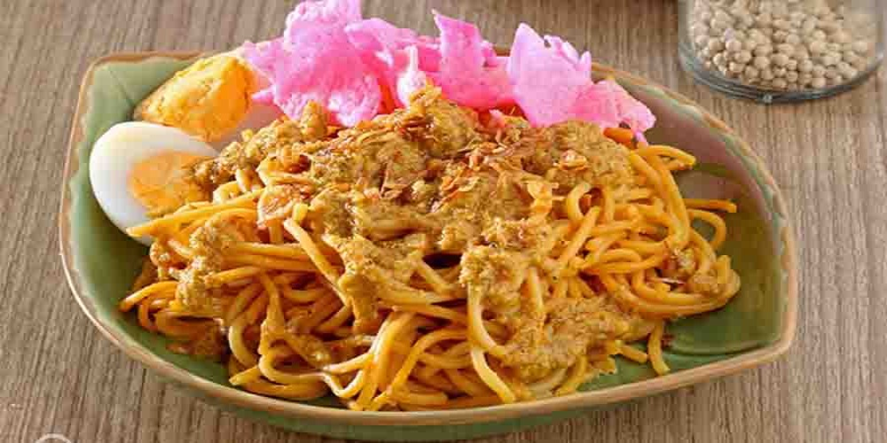

Mie Gomak Batak

Bahan
- Mie lidi
- Daun Jeruk
- Serai
- Minyak
- Tomat
- Cabai
- kunyit
Cara Membuat
- Kuah mie: Panaskan minyak, tumis bumbu halus, serai, dan daun jeruk hingga harum. Masukkan daging, masak sambil diaduk hingga berubah warna.
- Tuang susu rendah lemak, masak hingga daging empuk. Masukkan Royco Kaldu Sapi, santan, kecombrang, mendidih. Masukkan santan, kecombrang, dan andaliman. Masak hingga mendidih.
- Masukkan daun bawang dan tomat. Aduk rata, angkat.
- Tata mi lidi di dalam mangkuk, siram dengan kuah. Sajikan.